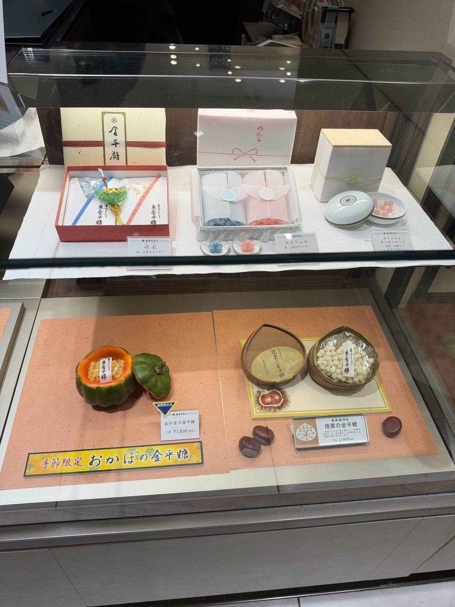
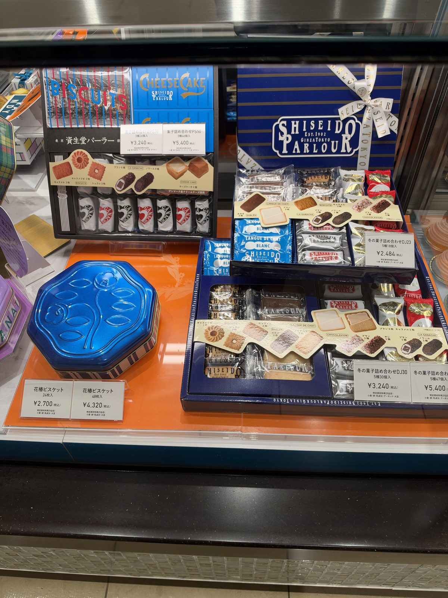
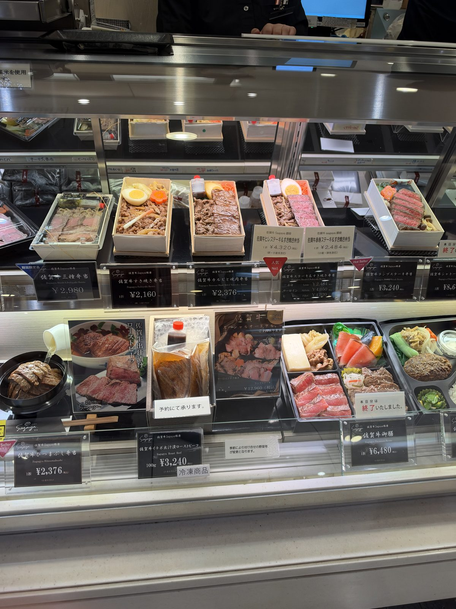
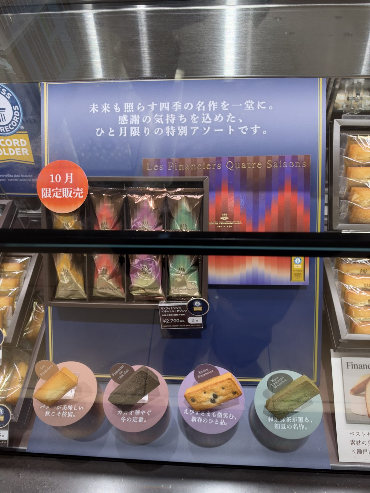
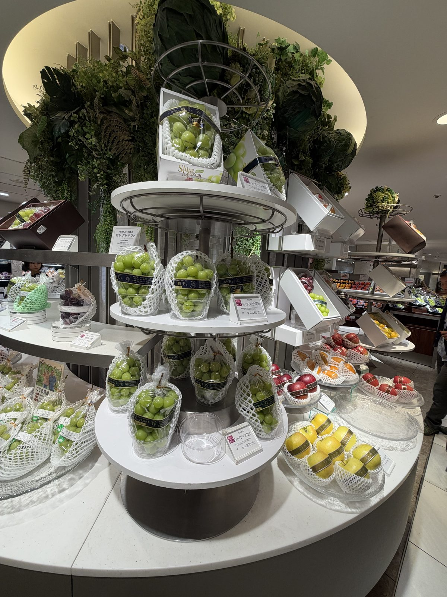

DEPACHIKA
Depachika: How to Shop a Japanese Department Store Food Hall
What a depachika is
Depachika is short for "department store basement," and it means the food floor that sits below street level in most big department stores. It is a grid of small counters rather than one big supermarket: a section for Japanese sweets, one for Western-style sweets, several for prepared food and bento, a fruit section, and often a bakery. Most of it is counter service rather than self-service, and each counter is run separately.
For a shopping trip it matters for three reasons. The sweets are already packaged for giving, so it is one of the easiest places to buy gifts for coworkers or family without doing any wrapping yourself. The bento counters are a proper meal to take back to the hotel or onto a train. And the seasonal and limited items change constantly, so what is on the shelf this month will not be there next month.
How to shop it: one lap first
Walk the whole floor once before buying anything. The floor is split into zones, usually Japanese sweets, Western-style sweets and baked goods, prepared food and bento, and fruit, though where each sits varies from store to store. A first lap without a basket shows you what is actually on offer that day and stops you buying the first good-looking box before seeing three better ones further along.
Buy the gift boxes you are taking home late in the trip rather than early. Osaka and Kyoto department stores have the same kind of food floor, so there is no need to buy everything in Tokyo and carry it for a week. Check the best-before date printed on the box: fresh wagashi may only last a day or two, while baked sweets usually last weeks.


Boxed gifts: built for giving
The reason depachika sweets work so well as gifts is the packaging. A box usually contains several individually wrapped pieces, so one box can be shared around an office without anyone needing a knife. That packaging also helps the contents survive travel, since the wrapping and the outer box cushion whatever is inside.
Broadly there are two categories: wagashi, traditional Japanese sweets often built around bean paste, mochi or sugar work, and Western-style sweets, meaning biscuits, cakes and similar items from Japanese and international makers alike. Prices for a shareable box of either type typically run from around ¥2,000 to ¥5,000 ($13–$33), with larger or more elaborate gift sets going well beyond that.
Bento and the evening discount stickers
Bento counters sell a full meal in a compartmentalised box, ranging from everyday rice-and-vegetable sets to premium versions built around a particular ingredient. Prices vary a great deal by what is inside, from around ¥1,000 for a simple box up to several thousand yen for a premium one.
Many bento counters put reduced-price stickers on unsold food, often in the last hour or two before closing. There is no fixed discount and no guaranteed stock; some counters sell out before any stickers appear. Still, it is worth timing a visit for late in the day if dinner can wait.

Seasonal and limited items
Because most counters are run by an individual maker rather than by the department store itself, limited and seasonal items turn over constantly. A gift box sold only this month will not be there next month, and a new seasonal release will have taken its place. If something is marked as a limited or seasonal item and it catches your eye, assume it will not be there on a return visit.

Premium fruit: look, then eat it here
The fruit section of a depachika is worth a look even if you buy nothing. Individual pieces of fruit are arranged and wrapped like gifts, and a single perfect piece or a small box of grapes can run into the thousands of yen.
Buy it to eat while you are in Japan, not to carry home. Fresh fruit is one of the most consistently restricted items at the border for the countries this site covers, and a depachika receipt does not change that. See what customs will take off you for the detail on which agricultural items get confiscated.

Tax-free sweets and the receipt rule
Tax-free shopping at a depachika works the same way it does anywhere else, with one new wrinkle to plan around. From 1 November 2026, sweets and other consumables bought tax-free must leave the country within 90 days, and the whole receipt is checked as a single unit at departure. If even one item from that receipt is missing at the customs check, the entire receipt fails, not just the missing item.
The practical fix is to keep anything you will eat or give away in Japan out of the tax-free claim altogether, and claim only on what is going home with you. See the new tax-free rules for how the 90-day window and the receipt check work in full.
Day 4 of the ten-day shopping itinerary is a depachika day. Use it to look and taste, and buy the boxes you are taking home in Osaka at the end of the trip.